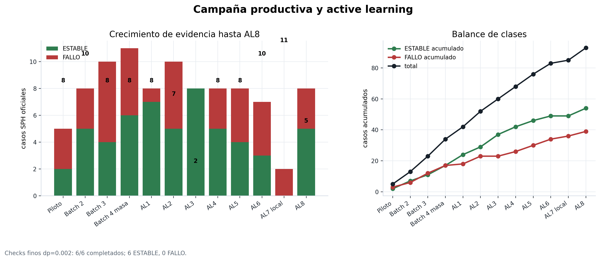
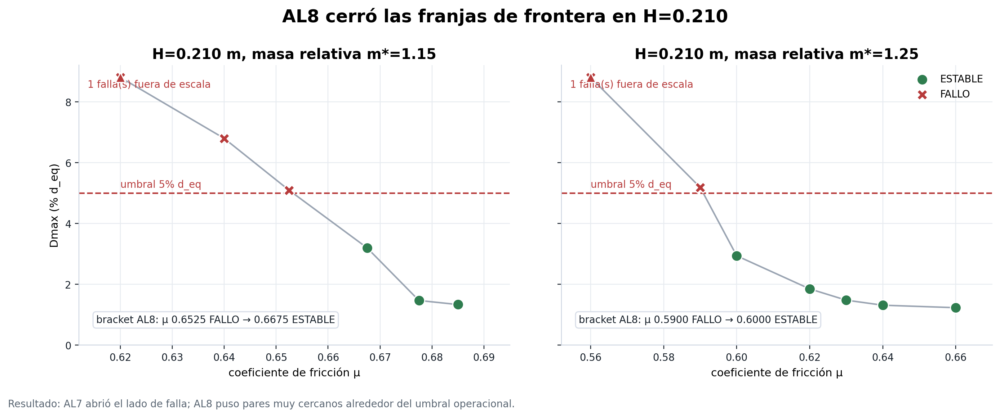
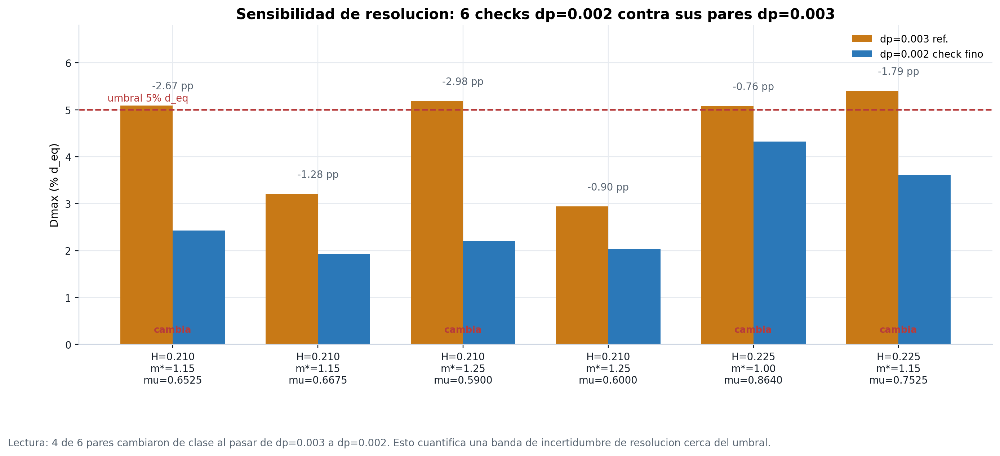
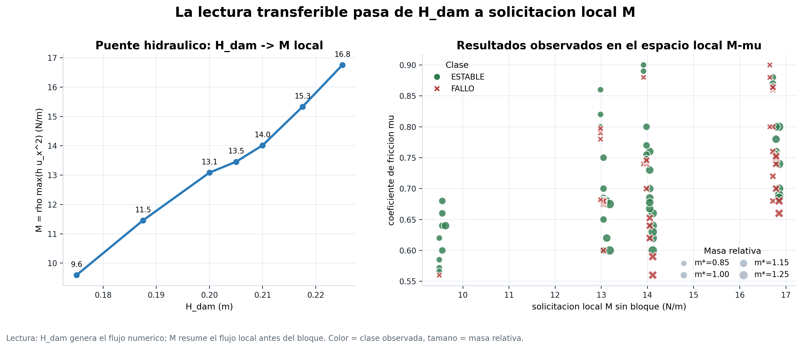
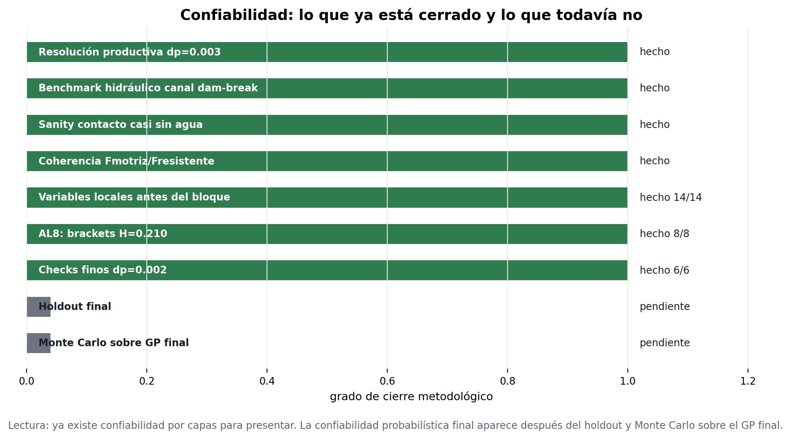
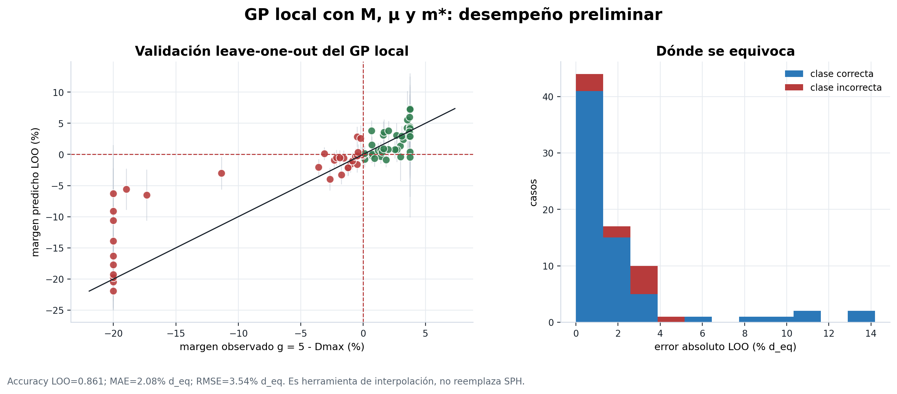

Resultados: frontera e incertidumbre de resolución
Estado actualizado con AL8, checks base dp=0.002 y refinamiento fino parcial. La evidencia de estabilidad, falla y cierre de fronteras se muestra separada de la hidráulica local y del GP local.
Estado ejecutivo
- Casos oficiales
- 93 campana productiva hasta AL8
- Estables / Fallos
- 54 / 39 criterio Dmax > 5% d_eq
- AL8
- 8/8 OK 5 ESTABLE, 3 FALLO
- dp=0.002
- 6/6 OK 6 ESTABLE, 0 FALLO
- Cambios de clase
- 4/6 FALLO en dp=0.003 -> ESTABLE en dp=0.002
- Refinamiento fino
- 2/4 2 FALLO, 2 en curso
AL8 y frontera H=0.210
AL8 cerro dos brackets en H=0.210: m*=1.15 entre μ=0.6525 y μ=0.6675, y m*=1.25 entre μ=0.5900 y μ=0.6000.
Checks finos dp=0.002
Los 6 checks base quedaron ESTABLES. Luego, el refinamiento fino en H=0.225, m*=1.00 ya tiene dos FALLO: mu=0.8535 y mu=0.8570. El bracket parcial queda entre mu=0.8570 FALLO y mu=0.8640 ESTABLE.
Figuras principales






Resumen por lote
| Lote | Casos oficiales | Estables | Fallos | Dmax mediano |
|---|---|---|---|---|
| Piloto | 5 | 2 | 3 | 5.02% |
| Batch 2 | 8 | 5 | 3 | 3.05% |
| Batch 3 | 10 | 4 | 6 | 7.31% |
| Batch 4 masa | 11 | 6 | 5 | 4.28% |
| AL1 | 8 | 7 | 1 | 1.25% |
| AL2 | 10 | 5 | 5 | 4.75% |
| AL3 | 8 | 8 | 0 | 3.17% |
| AL4 | 8 | 5 | 3 | 4.22% |
| AL5 | 8 | 4 | 4 | 4.47% |
| AL6 | 7 | 3 | 4 | 5.08% |
| AL7 | 2 | 0 | 2 | 19.83% |
| AL8 | 8 | 5 | 3 | 3.07% |
La tabla resume los lotes oficiales usados en las figuras.